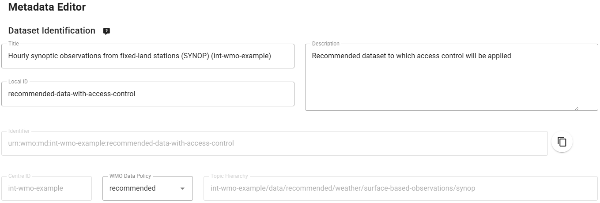

Configurazione di un dataset consigliato con controllo degli accessi
Risultati di apprendimento
Alla fine di questa sessione pratica, sarai in grado di:
- creare un nuovo dataset con politica dei dati 'recommended'
- aggiungere un token di accesso al dataset
- verificare che il dataset non sia accessibile senza il token di accesso
- aggiungere il token di accesso agli header HTTP per accedere al dataset
Introduzione
I dataset che non sono considerati dataset 'core' nel WMO possono essere opzionalmente configurati con una politica di controllo degli accessi. wis2box fornisce un meccanismo per aggiungere un token di accesso a un dataset che impedirà agli utenti di scaricare i dati a meno che non forniscano il token di accesso negli header HTTP.
Preparazione
Assicurati di avere accesso SSH alla tua VM studente e che la tua istanza wis2box sia attiva e funzionante.
Assicurati di essere connesso al broker MQTT della tua istanza wis2box utilizzando MQTT Explorer. Puoi utilizzare le credenziali pubbliche everyone/everyone per connetterti al broker.
Assicurati di avere un browser web aperto con il wis2box-webapp per la tua istanza andando su http://<tuo-host>/wis2box-webapp.
Esercizio 1: creare un nuovo dataset con politica dei dati 'recommended'
Vai alla pagina 'dataset editor' nel wis2box-webapp e crea un nuovo dataset. Utilizza lo stesso centre-id delle sessioni pratiche precedenti e usa il template='surface-weather-observations/synop'.
Clicca 'OK' per procedere.
Nell'editor del dataset, imposta la politica dei dati su 'recommended' (nota che la modifica della politica dei dati aggiornerà la 'Topic Hierarchy'). Sostituisci l'ID locale generato automaticamente con un nome descrittivo per il dataset, ad esempio 'recommended-data-with-access-control':

Continua a compilare i campi richiesti per le Proprietà Spaziali e le Informazioni di Contatto, e 'Valida il modulo' per verificare eventuali errori.
Infine, invia il dataset, utilizzando il token di autenticazione creato in precedenza, e verifica che il nuovo dataset sia stato creato nel wis2box-webapp.
Controlla MQTT-explorer per vedere che ricevi il Messaggio di Notifica WIS2 che annuncia il nuovo record di Metadati di Scoperta sul topic origin/a/wis2/<tuo-centre-id>/metadata.
Esercizio 2: aggiungere un token di accesso al dataset
Accedi al container wis2box-management,
cd ~/wis2box-1.0.0rc1
python3 wis2box-ctl.py login
Dalla riga di comando all'interno del container puoi proteggere un dataset utilizzando il comando wis2box auth add-token, utilizzando il flag --metadata-id per specificare l'identificatore di metadati del dataset e il token di accesso come argomento.
Ad esempio, per aggiungere il token di accesso S3cr3tT0k3n al dataset con identificatore di metadati urn:wmo:md:not-my-centre:core.surface-based-observations.synop:
wis2box auth add-token --metadata-id urn:wmo:md:not-my-centre:reco.surface-based-observations.synop S3cr3tT0k3n
Esci dal container wis2box-management:
exit
Esercizio 3: pubblicare alcuni dati nel dataset
Copia il file exercise-materials/access-control-exercises/aws-example2.csv nella directory definita da WIS2BOX_HOST_DATADIR nel tuo wis2box.env:
cp ~/exercise-materials/access-control-exercises/aws-example2.csv ~/wis2box-data
Quindi usa WinSCP o un editor da riga di comando per modificare il file aws-example2.csv e aggiornare gli identificatori WIGOS-station nei dati di input per corrispondere alle stazioni che hai nella tua istanza wis2box.
Successivamente, vai allo station-editor nel wis2box-webapp. Per ogni stazione che hai utilizzato in aws-example2.csv, aggiorna il campo 'topic' per corrispondere al 'topic' del dataset che hai creato nell'esercizio precedente.
Questa stazione sarà ora associata a 2 topic, uno per il dataset 'core' e uno per il dataset 'recommended':

Dovrai utilizzare il tuo token per collections/stations per salvare i dati della stazione aggiornati.
Successivamente, accedi al container wis2box-management:
cd ~/wis2box-1.0.0rc1
python3 wis2box-ctl.py login
Dalla riga di comando wis2box possiamo inserire il file di dati di esempio aws-example2.csv in un dataset specifico come segue:
wis2box data ingest -p /data/wis2box/aws-example2.csv --metadata-id urn:wmo:md:not-my-centre:reco.surface-based-observations.synop
Assicurati di fornire l'identificatore di metadati corretto per il tuo dataset e verifica di ricevere notifiche di dati WIS2 in MQTT Explorer, sul topic origin/a/wis2/<tuo-centre-id>/data/recommended/surface-based-observations/synop.
Controlla il link canonico nel Messaggio di Notifica WIS2 e copia/incolla il link nel browser per provare a scaricare i dati.
Dovresti vedere un errore 403 Forbidden.
Esercizio 4: aggiungere il token di accesso agli header HTTP per accedere al dataset
Per dimostrare che il token di accesso è necessario per accedere al dataset, riprodurremo l'errore che hai visto nel browser utilizzando la funzione da riga di comando wget.
Dalla riga di comando nella tua VM studente, usa il comando wget con il link canonico che hai copiato dal Messaggio di Notifica WIS2.
wget <link-canonico>
Dovresti vedere che la richiesta HTTP restituisce 401 Unauthorized e i dati non vengono scaricati.
Ora aggiungi il token di accesso agli header HTTP per accedere al dataset.
wget --header="Authorization: Bearer S3cr3tT0k3n" <link-canonico>
Ora i dati dovrebbero essere scaricati con successo.
Conclusione
Congratulazioni!
In questa sessione pratica, hai imparato come:
- creare un nuovo dataset con politica dei dati 'recommended'
- aggiungere un token di accesso al dataset
- verificare che il dataset non sia accessibile senza il token di accesso
- aggiungere il token di accesso agli header HTTP per accedere al dataset